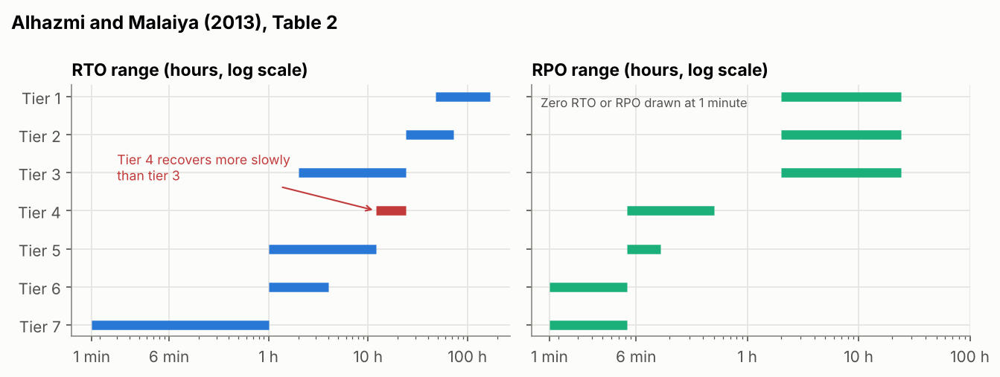
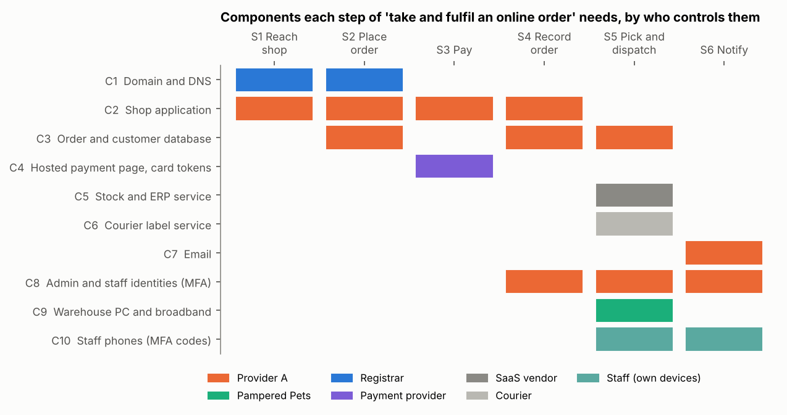
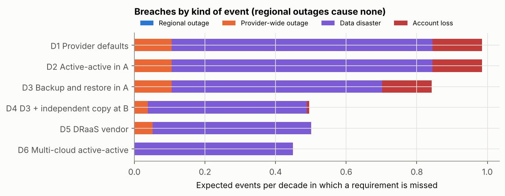
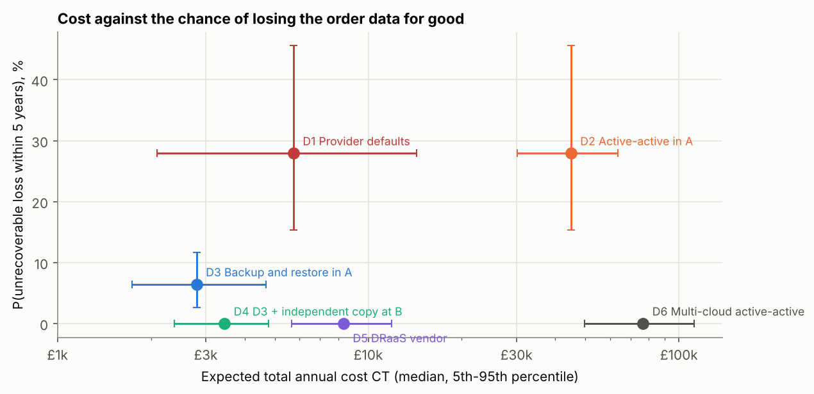

Unit 10: Practical Applications and Issues in DR Implementations
In brief: Seminar answers on vendor lock-in and cloud security, and a DR design tested against Pampered Pets’ RTO and RPO. A design meeting the requirements costs about £3,400 a year, against about £45,000 for active-active.
This unit covers the practical side of disaster recovery (DR): how RPO and RTO values shape a DR solution, typical designs for each level of standby, their limitations, the advantages and disadvantages of Disaster-Recovery-as-a-Service (DRaaS), and the challenges of vendor lock-in, resilience and network security. The artefacts below are my seminar answers on vendor lock-in and cloud security, and a notebook that designs a DR solution for Pampered Pets against the recovery objectives set in Unit 9.
Reflection
Structured using the What? So what? Now what? model (Rolfe, Freshwater and Jasper, 2001).
What?
Unit 9 set recovery objectives; Unit 10 asked how to meet them and what the usual designs leave out. The lecturecast linked RPO and RTO values to cold, warm and hot standby, set out typical designs for each and discussed their limits, including those of DRaaS. The required reading was Alhazmi and Malaiya’s (2013) cost framework for cloud-based DR, Kumar’s (2024) seminar paper on cloud vendor lock-in and Corbari et al.’s (2024) article on mission thread analysis; I had read the recommended Zografopoulos et al. (2021) for Unit 8. For the seminar I answered two questions on lock-in and cloud security (Artefact 1). I then used Alhazmi and Malaiya’s equations and a mission thread to compare six DR designs for Pampered Pets against the requirements from my Unit 9 business impact analysis (Artefact 2).
So what?
Alhazmi and Malaiya (2013) give a usable structure: a plan’s annual cost is its initial cost, running cost and expected cost of disasters, and the RTO is built from the recovery steps the standby has not already done, from provisioning hardware to switching the IP address. They also warn that a cloud DR site shared by many customers in one region ‘may be overwhelmed’ if they all fail over at once. Checking the paper was less reassuring. The tier table they reproduce does not support their claim that a higher tier ‘would exponentially reduce RTO’: tier 4 recovers more slowly than tier 3, and tiers 1 to 3 have the same RPO. Equation 3, read literally, charges every disaster both the cost of recovering and the cost of failing to recover. When I ran it on my full model it recommended the provider defaults, the one design with no independent copy, in 99.9% of input sets, because a design’s ability to recover no longer changes its cost. With the two costs weighted by the probability of recovery, that share fell below 7%. Like Andrade et al. (2017) in Unit 9, they assume that ‘backup reliability is 1’, and their only cost input is a table of revenue lost per hour in 2000, with retail at $1,107,274, about 75,000 times my estimate for Pampered Pets. The table is credited to reference 15, a vendor web page, while references 14 and 16 are never cited, so the numbering seems to have slipped.
That made three readings in a row with a sourcing fault. Hollcroft and Lyon (2022) left ‘(Citation, year)’ in a published chapter, Kumar (2024) cites ‘[src2]’ and ‘[src20]’, which do not resolve, and Corbari et al. (2024) say that defending data in AWS takes ‘X months’ of training and in Azure ‘Y months’. I doubt the literature has got worse; I am reading it more closely than at the start of the module, and slips like these show how carefully the rest was checked. Kumar’s paper is useful for its typology of lock-in (technical, data, service, certification, contract, economic and network) and for showing how contracts make leaving hard through auto-renewal, termination charges and SLA breaches paid in service credits. But it is a supervised seminar paper published by OSSBIG, an Austrian group that promotes open source, and it ends by endorsing four open-source products without comparing them with anything. Its claim that the GDPR ‘mandates the storage’ of personal data in the EU is wrong: the regulation restricts transfers unless there is an adequacy decision or appropriate safeguards (ICO, no date). It also misses the EU Data Act, which from 12 September 2025 limits notice to switch provider to two months and bans switching charges from 12 January 2027 (Regulation (EU) 2023/2854). Opara-Martins, Sahandi and Tian (2016) and the CMA (2025) make the case for lock-in as a real cost on much firmer evidence (see Artefact 1).
The uncomfortable part was recognising my own executive summary in Kumar’s list. It said that vendor lock-in ‘should be mitigated through containerisation, open APIs, and portability testing’ (Stevens, 2026). Those are measures for organisations that write their own software. Pampered Pets would rent a shop platform, email and accounting, and containers do not move its order data, its staff identities or its domain name. In Unit 7 I found that my lock-in criterion was ambiguous; the deeper problem is that I scored lock-in when I should have managed it as a risk with an exit plan. The notebook also tested Kumar’s multi-cloud answer. Running live in two providers removed every infrastructure breach but cost a median of about £77,000 a year and still missed the data-disaster RPO about half the time, because replication copies the damage to both clouds.
Corbari et al. (2024) write for US Army cyber defenders, their evidence comes from classified operations a reader cannot check, and their worked example is fictional by design. Even so, their central idea transferred better than anything else this unit: mission relevant terrain includes everything a mission needs, and it ‘may exist external to’ the organisation’s own network. Mapping ‘take and fulfil an online order’ this way showed that every one of the six steps depends on the main cloud provider and that only the warehouse PC is under Pampered Pets’ control. It gave three design rules that a list of RTOs would have missed. The admin identities are a hidden single point, because losing them locks staff out of the shop, email and backups at once. The domain’s DNS has to stay with the registrar, or the means of moving to another provider disappears with the provider. And the payment provider already holds an independent record of every paid order. Their remark about separate AWS and Azure training also points to a kind of lock-in that Kumar leaves out: skills. With four staff, the person who knows how to rebuild elsewhere is as much a constraint as the data.
The notebook changed my view of what a DR design is for. With a 36-hour RTO, a regional outage never breached the requirements in any design, because it can be waited out. The second region in my executive summary’s active-active design therefore protects against the one event that did not need it, at about £45,000 a year, and leaves the five-year chance of losing the order data for good at 28%, the same as the provider defaults. The events that matter are common-cause ones that take out every region of a provider together: a provider-wide outage, an attacker with admin credentials, or the loss of the account. This is the ‘geographical correlation factor’ that Alhazmi and Malaiya say needs modelling but leave out. In 2024 a blank parameter in a Google Cloud tool deleted UniSuper’s private cloud across both of the geographies it used for redundancy, and the joint statement credits backups ‘with an additional service provider’ for the recovery (UniSuper and Google Cloud, 2024), although Google’s own account credits backups in Google Cloud Storage that survived the deletion, along with third-party backup software (Google Cloud, 2024). Backup and restore inside one provider (D3) was the cheapest design on expected cost in 70% of input sets. Adding a copy every 15 minutes at a second provider under separate credentials (D4) cost a median of about £670 a year more and cut the five-year chance of an unrecoverable loss from 6% to almost nothing, a difference that expected cost, the only output of Alhazmi and Malaiya’s framework, cannot show. DRaaS (D5) met the requirements about as well at more than twice the cost, and added a supplier with a full copy of the data that, in half my input sets, runs on the same provider.
The least expected result concerned detection. No design met the 24-hour RPO for data disasters in more than about half of cases, because damage is often noticed late, and data entered after the damage is lost whatever the backup interval. A daily reconciliation of shop orders against the payment provider’s records raised D4 to over 99%. At about £800 a year it does not pay for itself in expected loss; it is what makes the requirement achievable, and whether that is worth £800 is for the owner to decide. The security question led to the same place. Most of what goes wrong in the cloud is on the customer’s side of the shared responsibility model: misconfiguration and identity management head the Cloud Security Alliance’s (2024) list, and in the 2024 Snowflake campaign about 165 organisations were notified as potentially exposed after an attacker logged in with stolen passwords to accounts without MFA (Mandiant, 2024). Providers fail too; the Cyber Safety Review Board found the 2023 Storm-0558 intrusion into Microsoft’s cloud ‘preventable’ (DHS, 2024). In the notebook the attacker with admin credentials and the data disaster are the same event, so separate credentials for the backup copy are a security control and a DR control at once.
Now what?
Five changes follow. First, before designing recovery for any service I will map its mission thread, including what the organisation uses as well as what it owns, and look at identity and DNS first. Second, I will ask what could take out the primary and the copy together, not how far apart they are, and model those common-cause events separately. Third, I will report the probability of an unrecoverable loss next to the expected cost, and test any cost equation on a small case with a known answer before relying on it. Fourth, I will treat vendor lock-in as a risk with an exit plan: open-format exports, the domain kept with the registrar, exit terms read before signing, and a restore at a second provider that doubles as an exit rehearsal. Fifth, in my end-of-module e-portfolio I will replace the executive summary’s active-active recommendation and its ‘containerisation’ mitigation with D4 and daily reconciliation, building on Unit 9’s backup and restore conclusion. At work, I will check whether our DR copies can be deleted with the same admin credentials as production, and whether anyone has tried recovering to another provider.
Artefact 1: Seminar Activity: Vendor Lock-in and Cloud Security
Answers prepared for the Unit 10 seminar on Kumar (2024) and Corbari et al. (2024). Where an answer draws on the Pampered Pets design, the evidence is in Artefact 2.
1. What are some of the main vendor lock-in issues the authors identify? How would you mitigate them?
Kumar (2024) defines lock-in as reliance on a provider that makes it ‘expensive and impossible’ to move without major cost and disruption, and sorts the causes into three groups. The organisational obstacles are proprietary standards, poor interoperability and portability, and security controls built around one provider’s architecture. The technical obstacles are deep integration with the provider’s tools, applications and data formats that only work on one platform, and proprietary APIs. The legal obstacles are data governance and contracts. Contracts favour the provider through long commitments, auto-renewal, early termination charges and long notice periods, and SLAs are measured over long periods and compensated with service credits instead of a right to leave. The paper also notes fees for moving data out and the need for an exit strategy that covers data retrieval, retention and destruction. The dangers follow from these: price rises once switching is expensive, less room to adopt new technology, exposure to the provider’s own failures, compliance problems when data moves, and security that depends on the vendor’s pace. Kumar also lists seven types of lock-in: technical, data, service, certification, contract, economic and network. Corbari et al. (2024) do not write about lock-in, but two of their points bear on it. Protection has to cover terrain the organisation uses but does not own, and defending data in AWS and in Azure needs separate training, which is lock-in through skills.
Independent evidence supports the main claims. Opara-Martins, Sahandi and Tian (2016) found in a survey of 114 participants that lock-in gets worse as more computing moves from on-premise to the cloud. The CMA (2025) found that egress fees are ‘a key commercial barrier’ to switching and multi-cloud, and that differences in features and interfaces, latency and staff skills make interoperability harder. Kumar’s section on data overstates the GDPR, which restricts transfers outside the UK or EU but does not require local storage (ICO, no date), and it does not mention the EU Data Act’s switching rights, which have applied since 12 September 2025 (Regulation (EU) 2023/2854). Those rights protect customers in the EU, so a UK business such as Pampered Pets cannot rely on them.
Kumar’s mitigations are proactive exit planning, multi-cloud, containers, infrastructure as code, open data formats and loosely coupled applications. All are sensible, but most suit organisations that build their own software, and multi-cloud swaps lock-in for operational overhead, as the paper admits. I would mitigate in proportion to the business, asking for each dependency how long it would take and what it would cost to leave. For Pampered Pets that gives the following:
| Type of lock-in | How it would affect Pampered Pets | Mitigation |
|---|---|---|
| Data | Order and customer records held in the shop platform’s own format | Exports every 15 minutes in open formats (CSV, SQL dump) to a second provider, with an import tested twice a year |
| Network | If the provider hosts the domain’s DNS, the shop cannot be pointed anywhere else when the provider fails | Keep the domain and DNS with an independent registrar, with short time-to-live values |
| Identity (persona) | Staff and admin accounts held by the main provider, so losing the account also locks staff out of email and backups | Separate credentials and MFA for the backup provider, and a break-glass account not held by the main provider |
| Contract and economic | Auto-renewal, termination charges, multi-year commitments, unclear terms for returning data | Read exit, data return and deletion terms before signing; prefer monthly terms until the platform has proved itself |
| Technical and service | Platform-specific apps, themes and integrations | Use them where they save money, but list each one in a one-page exit plan with the alternative |
| Skills | One person knows how the platform is set up | A written runbook, and the twice-yearly restore at the second provider carried out by someone else |
The test of these measures is the exit itself. In Artefact 2 the rebuild at a second provider is also an exit rehearsal, and a tested rebuild within a day or so is much stronger evidence of portability than a container image that has never been moved.
2. What are some security concerns with the modern cloud? How can these be mitigated?
The first concern is the customer’s side of shared responsibility. The Cloud Security Alliance’s (2024) survey puts misconfiguration and inadequate change control first, followed by identity and access management, insecure interfaces and APIs, an inadequate cloud security strategy and insecure third-party resources. The 2024 Snowflake campaign shows how ordinary the cause can be. About 165 organisations were notified as potentially exposed after an attacker logged in with usernames and passwords taken by infostealer malware, some stolen years earlier and never changed. The accounts had no MFA and no network allow lists, and at least 79.7% of the credentials used had been exposed before (Mandiant, 2024). The mitigations are basic but have to be applied everywhere: phishing-resistant MFA on every account, rotating credentials, restricting admin access to known networks and devices, keeping configuration under change control, and logging and alerting (NCSC, no date, principles 9 to 13). For Pampered Pets this matters more because staff use their own phones on the shop Wi-Fi (Group 2, 2025), and those phones would be the obvious devices for MFA codes.
The second concern is the provider’s own security, which the customer cannot see or fix. The Cyber Safety Review Board found that the 2023 Storm-0558 intrusion into Microsoft’s email service was ‘preventable’ and pointed to a culture that ‘deprioritized enterprise security investments’ (DHS, 2024). The customer can only choose providers whose assurance can be checked against the NCSC’s (no date) fourteen cloud security principles and design so that one provider’s failure does not lose everything. The third concern is concentration. Outages, faulty updates and administrative errors at one provider reach thousands of customers at once, as the CrowdStrike and us-east-1 events discussed in Unit 9 and the deletion of UniSuper’s private cloud showed (Microsoft, 2024; AWS, 2025; UniSuper and Google Cloud, 2024). The mitigation is a copy outside that provider, under credentials it does not control. The fourth is data protection. Personal data sent outside the UK needs an adequacy decision or appropriate safeguards (ICO, no date), so the region and any support access by the provider have to be checked. The fifth is network security. Management consoles and APIs are reachable from the internet by default, and DRaaS adds a replication link and a supplier with a full copy of the data. Admin access should be restricted to known networks, replication encrypted, and the DR supplier’s access kept to the minimum and tested like any other supplier’s.
Corbari et al. (2024) add a way to decide where to start. Mapping the mission thread first shows which systems the business cannot work without, wherever they are hosted, so limited effort goes to those. For Pampered Pets that means the admin identities, the order database and the domain, in that order.
Artefact 2: Designing a DR Solution for Pampered Pets against RPO and RTO Requirements
Python notebook: unit10_pampered_pets_dr_design.ipynb. Uses the cost equations and RTO decomposition of Alhazmi and Malaiya (2013), corrected where Section 1 shows it is needed, and the mission thread analysis of Corbari et al. (2024). Every figure is an assumption made for this exercise; the business inputs are the same as in Unit 9, and ‘provider A’ and ‘provider B’ are placeholders, not products. 20,000 input sets, with common random numbers across designs.
1. Checking Alhazmi and Malaiya’s model

| Element of the paper | What the check found |
|---|---|
| Table 2 and the claim that a higher tier ‘would exponentially reduce RTO’ | Tier 4 is slower to recover than tier 3, and tiers 1 to 3 have the same RPO (2 to 24 hours). |
| Equation 3: Cd = Σ pi(Cr,i + Cu,i) | Charges every disaster both the recovery cost and the unrecoverable cost. In a two-design example, the design that cannot recover wins as printed (£2,700 against £3,600) and loses once the two costs are weighted by the probability of recovery (£2,600 against £1,100). |
| Assumption that ‘backup reliability is 1’ | Replaced: an untested restore fails the first time with probability 10–40%, a tested one 2–10%. |
| Table 3: retail loses $1,107,274 an hour (2000) | About 75,000 times the modelled median of £14.74 an hour for Pampered Pets. The table is credited to reference 15; references 14 and 16 are never cited. |
2. Requirements
| ID | Requirement | Target | Source |
|---|---|---|---|
| R1 | RTO for the online shop and order data | 36 h | Unit 9 BIA: MTPD 72 h, RTO at most half |
| R2 | RPO after an infrastructure event (outage, account loss) | 15 min | Unit 9 BIA for customer and order data |
| R3 | RPO after a data disaster (ransomware, deletion, corruption) | 24 h | New: replication is not a backup |
| R4 | At least one copy that production admin credentials cannot delete | Rule | NCSC (2019); Unit 9 |
| R5 | Restore tested end to end at least twice a year | Rule | Unit 9: trust an RTO only once tested |
3. Mission thread: what does taking an online order depend on?

Following Corbari et al. (2024), the mission process thread (the steps) is separated from the mission engineering threads (the components and data paths that carry each step). Every step needs provider A, and only the warehouse PC is under Pampered Pets’ control. Three design rules follow: identities need a break-glass route that does not depend on provider A; the domain and DNS stay with the registrar; and the payment provider’s records are an independent copy of every paid order, usable for re-keying and for detecting missing or altered orders.
4. Designs and whether they meet the requirements
Four kinds of event are modelled: an outage of one region of provider A, an outage of the whole of provider A, a data disaster through the admin plane, and the loss of the account at provider A. The figures are the probability that, when an event of that kind happens, service returns within the RTO and data loss stays within the RPO for that kind of event.
| Design | Regional outage | Provider-wide outage | Data disaster | Account loss | P(unrecoverable loss in 5 years), median |
|---|---|---|---|---|---|
| D1 Provider defaults (one region, backups in the same account) | 100% | 92% | 21% | 0% | 27.9% |
| D2 Active-active in two regions of A (executive summary) | 100% | 92% | 21% | 0% | 27.9% |
| D3 Backup and restore in A, with an immutable vault | 100% | 92% | 36% | 0% | 6.4% |
| D4 D3 plus a copy every 15 minutes at provider B under separate credentials | 100% | 97% | 52% | 95% | 0.0% |
| D5 DRaaS vendor | 100% | 96% | 52% | 100% | 0.0% |
| D6 Multi-cloud active-active across A and B | 100% | 100% | 52% | 100% | 0.0% |

5. Cost against the risk of losing the data for good
| Design | Running and set-up a year (median) | Expected disaster cost Cd (median) | Total CT (median) | Cheapest in |
|---|---|---|---|---|
| D1 Provider defaults | £63 | £5,678 | £5,744 | 6.6% |
| D2 Active-active in A | £38,246 | £5,587 | £44,896 | 0% |
| D3 Backup and restore in A | £1,391 | £1,339 | £2,802 | 69.8% |
| D4 D3 plus independent copy at B | £3,030 | £383 | £3,444 | 23.5% |
| D5 DRaaS vendor | £7,822 | £362 | £8,321 | 0% |
| D6 Multi-cloud active-active | £76,491 | £96 | £76,602 | 0% |

D4 costs a median of £670 a year more than D3 and removes the 6% five-year chance of losing the order data through the loss of the account. With Equation 3 as printed, the provider defaults would be the cheapest design in 99.9% of input sets.
6. Detection
| Design | Data disasters meeting R1 and R3 | With daily reconciliation against payment records | Breaches per decade | With reconciliation |
|---|---|---|---|---|
| D3 Backup and restore in A | 36.1% | 72.5% | 0.84 | 0.50 |
| D4 D3 plus independent copy at B | 51.9% | 99.5% | 0.50 | 0.05 |
| D5 DRaaS vendor | 52.0% | 99.5% | 0.50 | 0.06 |
| D6 Multi-cloud active-active | 52.0% | 99.5% | 0.45 | 0.00 |
Data entered after corruption begins is lost whatever the backup interval, so the data-disaster RPO depends on how quickly the damage is noticed. Reconciliation costs a median of about £800 a year and saves D4 only a few pounds of expected loss; its value is that it makes R3 achievable. The recommended design is D4 with daily reconciliation, the domain and DNS kept with the registrar, and the rebuild at provider B tested twice a year as both a DR test and an exit rehearsal.
References
Alhazmi, O.H. and Malaiya, Y.K. (2013) ‘Evaluating disaster recovery plans using the cloud’, 2013 Proceedings Annual Reliability and Maintainability Symposium (RAMS). IEEE, pp. 1–6. Available at: https://www.cs.colostate.edu/~malaiya/p/DisasterRecovery2013.pdf (Accessed: 3 October 2026).
Andrade, E., Nogueira, B., Matos, R., Callou, G. and Maciel, P. (2017) ‘Availability modeling and analysis of a disaster-recovery-as-a-service solution’, Computing, 99(10), pp. 929–954. Available at: https://doi.org/10.1007/s00607-017-0539-8 (Accessed: 3 October 2026).
AWS (2025) Summary of the Amazon DynamoDB service disruption in the Northern Virginia (US-EAST-1) Region. Seattle, WA: Amazon Web Services. Available at: https://aws.amazon.com/message/101925/ (Accessed: 3 October 2026).
Cloud Security Alliance (2024) Top threats to cloud computing 2024. Seattle, WA: Cloud Security Alliance. Available at: https://cloudsecurityalliance.org/artifacts/top-threats-to-cloud-computing-2024 (Accessed: 3 October 2026).
Competition and Markets Authority (CMA) (2025) Cloud services market investigation: summary of final decision, 31 July. London: CMA. Available at: https://assets.publishing.service.gov.uk/media/688b20e6ff8c05468cb7b120/summary_of_final_decision.pdf (Accessed: 3 October 2026).
Corbari, G.I., Khatod, N., Popiak, J.F. and Sinclair, P. (2024) ‘Mission thread analysis: establishing a common framework in a multi-discipline domain to enhance defensive cyberspace operations’, The Cyber Defense Review, 9(1), pp. 37–54. Available at: https://www.jstor.org/stable/48770663 (Accessed: 3 October 2026).
Department of Homeland Security (DHS) (2024) ‘Cyber Safety Review Board releases report on Microsoft Online Exchange incident from summer 2023’, DHS press release, 2 April. Available at: https://www.dhs.gov/news/2024/04/02/cyber-safety-review-board-releases-report-microsoft-online-exchange-incident-summer (Accessed: 3 October 2026).
Google Cloud (2024) ‘Sharing details on a recent incident impacting one of our customers’, Google Cloud blog, 24 May. Available at: https://cloud.google.com/blog/products/infrastructure/details-of-google-cloud-gcve-incident (Accessed: 3 October 2026).
Group 2 (2025) A risk assessment report for Pampered Pets based on IEC27005:2022 / ISO/IEC31000:2018 [sic]. Unpublished team report, Security and Risk Management module. University of Essex Online.
Hollcroft, B. and Lyon, B. (2022) ‘Business continuity plan’, in Popov, G., Lyon, B.K. and Hollcroft, B.D. Risk assessment: a practical guide to assessing operational risks. 2nd edn. Hoboken, NJ: John Wiley & Sons, ch. 19. Available at: https://www.oreilly.com/library/view/risk-assessment-2nd/9781119755920/ (Accessed: 3 October 2026).
Information Commissioner’s Office (ICO) (no date) International transfers. Wilmslow: ICO. Available at: https://ico.org.uk/for-organisations/uk-gdpr-guidance-and-resources/international-transfers/ (Accessed: 3 October 2026).
Kumar, A. (2024) Cloud vendor lock-in: identify, strategies and mitigate. Seminar paper, supervised by F. Waldhofer and H. Wehnes, 10 September. OSSBIG Austria. Available at: https://www.ossbig.at/wp-content/uploads/2024/09/CAN_Final_Report-VendorLock-In.pdf (Accessed: 3 October 2026).
Mandiant (2024) ‘UNC5537 targets Snowflake customer instances for data theft and extortion’, Google Cloud blog, 10 June. Available at: https://cloud.google.com/blog/topics/threat-intelligence/unc5537-snowflake-data-theft-extortion (Accessed: 3 October 2026).
Microsoft (2024) ‘Helping our customers through the CrowdStrike outage’, The Official Microsoft Blog, 20 July. Available at: https://blogs.microsoft.com/blog/2024/07/20/helping-our-customers-through-the-crowdstrike-outage/ (Accessed: 3 October 2026).
National Cyber Security Centre (NCSC) (2019) ‘Offline backups in an online world’, NCSC blog, 13 August. Available at: https://www.ncsc.gov.uk/blog-post/offline-backups-in-an-online-world (Accessed: 3 October 2026).
National Cyber Security Centre (NCSC) (no date) The cloud security principles. London: NCSC. Available at: https://www.ncsc.gov.uk/collection/cloud/the-cloud-security-principles (Accessed: 3 October 2026).
Opara-Martins, J., Sahandi, R. and Tian, F. (2016) ‘Critical analysis of vendor lock-in and its impact on cloud computing migration: a business perspective’, Journal of Cloud Computing, 5, article 4. Available at: https://doi.org/10.1186/s13677-016-0054-z (Accessed: 3 October 2026).
Regulation (EU) 2023/2854 of the European Parliament and of the Council of 13 December 2023 on harmonised rules on fair access to and use of data and amending Regulation (EU) 2017/2394 and Directive (EU) 2020/1828 (Data Act). Official Journal of the European Union, L, 22 December 2023. Available at: https://eur-lex.europa.eu/eli/reg/2023/2854/oj (Accessed: 3 October 2026).
Rolfe, G., Freshwater, D. and Jasper, M. (2001) Critical reflection for nursing and the helping professions: a user’s guide. Basingstoke: Palgrave Macmillan.
Stevens, I. (2026) Quantitative risk assessment and digital resilience strategy for Pampered Pets: executive summary. Unpublished assignment, Security and Risk Management module. University of Essex Online.
UniSuper and Google Cloud (2024) ‘A joint statement from UniSuper CEO Peter Chun, and Google Cloud CEO, Thomas Kurian’, UniSuper media centre, 8 May. Available at: https://www.unisuper.com.au/about-us/media-centre/2024/a-joint-statement-from-unisuper-and-google-cloud (Accessed: 3 October 2026).
Zografopoulos, I., Ospina, J., Liu, X. and Konstantinou, C. (2021) ‘Cyber-physical energy systems security: threat modeling, risk assessment, resources, metrics, and case studies’, IEEE Access, 9, pp. 29775–29818. Available at: https://doi.org/10.1109/ACCESS.2021.3058403 (Accessed: 3 October 2026).